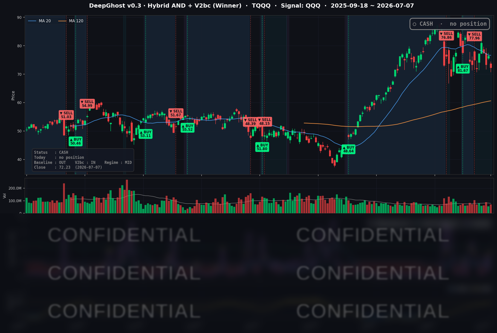

👻 매일 시그널과 히스토리를 홈페이지에서 한눈에 → www.ghostai.co.kr
호르무즈 해협 상황 때문에 유가, 금리가 급등하면서 기술주가 하락했습니다. AI 인프라 구축에 너무 돈이 많이 들어가는 것 아닌가라는 의구심도 올라오고 있습니다.
투자 심리가 좋을때는 이런게 다 노이즈이지만, 안좋을때는 팔 이유를 이런 것에서 찾습니다. AI 지표는 매우 좋지 않습니다. 더 멀리 떨어져서 관망할 시기입니다.
📊 오늘의 매매 신호
| 항목 | 내용 |
|---|---|
| 오늘 할 일 | ✅ 아무것도 안 해도 됩니다 |
| 포지션 상태 | 💵 현금 보유 중 (OUT OF POSITION) |
| 현금 보유 기간 | 2026-06-25 ~ 2026-07-07 (12일) |
| TQQQ 종가 | $72.23 (-5.28%) |
지난 6/25 매도 이후 전략은 계속 현금 상태로 관망 중입니다. 이날 나스닥이 반도체 차익실현에 눌리며 QQQ가 -1.85%, 3배 레버리지 지표인 TQQQ는 -5.28% 하락했습니다.
TQQQ 시그널 — OUT OF POSITION
현재 상태: 현금 보유 중 | 6/25 매도 이후 관망

이날 시장의 방향성은 아래쪽으로 살짝 기울었고 횡보지표는 더 올라갔습니다. "많이 빠졌으니 저가 매수"라는 통념과 달리, 모델은 급락에 편승하지 않고 확인이 될 때까지 기다리는 것을 원칙으로 삼습니다. 특히 아래에서 살펴볼 매크로 역풍(유가 급등·장기금리 상승·연준 의사록 대기)까지 겹쳐, 부담이 큰 국면입니다.
오늘 미국 시장 — 시황 요약
지수 마감
| 지수 | 종가 | 등락률 |
|---|---|---|
| S&P 500 | 7,503.85 | -0.45% |
| Nasdaq Composite | 25,818.69 | -1.16% |
| Dow Jones | 52,925.15 | -0.25% |
| Russell 2000 | 2,982.49 | -0.90% |
나스닥이 반도체·테슬라 비중 탓에 가장 크게 눌렸고, 다우는 방어주·에너지 강세로 낙폭이 가장 작았습니다. 전형적인 "반도체 → 가치·에너지" 로테이션이 나온 하루입니다. 지수 낙폭 자체는 제한적이었습니다.
국채 금리 동향
| 만기 | 수익률 | 전일 대비 |
|---|---|---|
| 3개월 | 3.725% | -1.5bp |
| 10년 | 4.529% | +4.9bp |
| 30년 | 5.043% | +5.3bp |
단기(3개월)는 소폭 내리고 장기(10년·30년)는 4~5bp 올라 커브가 가팔라졌습니다(스티프닝). 10년-3개월 스프레드는 +80bp로 역전 없이 정상 구간입니다. 장기금리 상승은 고밸류 성장주의 할인율 부담을 키워 이날 기술주 약세와 방향이 같았고, 30년물이 5% 위에 안착한 점은 인플레·재정 경계가 이어지고 있음을 보여줍니다.
연준 발언 & 금리 패스
이날 개별 위원의 발언은 없었습니다(연휴 직후 한산한 주간). 시장의 눈은 7/8(수) 공개되는 6월 FOMC 의사록에 쏠려 있습니다. 6월 회의에서 연준은 기준금리를 3.50-3.75%로 동결했고, 신임 의장의 첫 회견은 물가 목표 달성 의지를 강조한 매파적 기조였습니다. 시장은 단기 인하 베팅을 줄이는 분위기이며, 의사록에서 매파 뉘앙스가 확인되면 장기금리·달러 강세로 기술주에 역풍이 될 수 있습니다. 이번 주 최대 이벤트입니다.
오늘의 핵심 이슈
- 반도체 차익실현(칩 셀오프) — 삼성 2분기 실적 호조가 오히려 "이미 주가에 반영됐다"는 차익실현 트리거로 작동했습니다. 상반기 AI 랠리로 급등했던 반도체가 되돌림에 들어가며 INTC -9.66%, MU -4.71% 등 메모리·파운드리·장비가 전방위로 약세였습니다.
- 호르무즈 지정학 → 유가 급등 — 호르무즈 해협 인근 유조선 피격과 대이란 판매 승인 철회 소식에 WTI가 +5%대 급등했습니다. 에너지주 강세가 다우를 방어했지만, 동시에 인플레 재점화 경계로 장기금리에 상승 압력을 더했습니다.
- 테슬라 sell-the-news — 2분기 인도량이 컨센서스를 크게 웃돌았음에도 -4.02% 하락했습니다. 직전 나흘간 +13% 급등한 선반영과 마진 우려가 겹친 "재료 소진성" 매도였습니다.
변동성 & 투자심리
VIX는 16.13으로 전일보다 소폭(+3.6%) 올랐지만 여전히 16선의 낮은 변동성 구간입니다. 반도체에 국한된 국지적 매도이지 시스템 리스크는 아니라는 신호입니다. CNN 공포탐욕지수는 약 44로 '공포(Fear)' 경계에 머물렀습니다. 개선되던 심리가 이날 기술주 약세로 다시 신중 쪽으로 기울었습니다.
매크로 & 원자재
- WTI 원유: $72.29 (+5.46%)
- Brent 원유: $76.10 (+5.71%)
- 금(Gold): $4,107.70 (-1.14%)
유가는 호르무즈 지정학 스파이크로 급등했고, 금은 실질금리 상승·달러 강세에 소폭 조정받았습니다. 다만 공급 측에서는 OPEC+ 증산이라는 완화 요인도 병존해, 유가는 지정학과 공급 증가의 줄다리기 국면입니다.
주요 종목 동향
| 종목 | 당일 종가 | 등락률 | 비고 |
|---|---|---|---|
| AAPL | 310.66 | -0.64% | 특이 헤드라인 없음, 지수 약세 동조 |
| NVDA | 196.93 | +0.71% | 칩 셀오프 속 상대적 견조 |
| MSFT | 388.84 | +0.54% | 소프트/클라우드 방어 |
| GOOGL | 367.03 | +0.16% | 강보합 |
| META | 615.58 | +2.55% | 커버리지 내 최강, 광고 플랫폼 강세 |
| AMZN | 245.98 | +0.75% | 상승 |
| TSLA | 402.90 | -4.02% | 인도 서프라이즈 후 sell-the-news |
| NFLX | 76.18 | +0.21% | 강보합 |
| AVGO | 370.78 | -0.83% | 반도체 약세 동조 |
| QCOM | 182.97 | -1.88% | 반도체 약세 동조 |
| INTC | 110.39 | -9.66% | 최대 낙폭, 삼성발 칩 셀오프 |
| MU | 938.38 | -4.71% | 메모리 밸류에이션 되돌림 |
이날의 핵심은 "테크 내부의 차별화"였습니다. 반도체·전기차는 크게 눌렸지만, 광고·클라우드·플랫폼 계열(META·MSFT·AMZN·NVDA·GOOGL)은 오히려 초록불이었습니다. 반도체 단일 섹터의 밸류에이션 리셋이 지수를 끌어내린 국면으로 정리할 수 있습니다.
Ghost.AI — Quantitative AI Investment
Model: DeepGhost v0.3 | Transformer-Based Deep Learning
Coverage: 13 tickers | Updated every trading day after US market close
⚠️ 본 자료는 정보 제공 목적으로만 작성되었으며 투자 권유가 아닙니다. 모든 투자의 책임은 투자자 본인에게 있습니다. 과거 성과가 미래 수익을 보장하지 않습니다.
[유의사항]
- 본 서비스는 불특정 다수를 대상으로 발행되는 단방향 정보 제공 서비스이며, 투자자 개인의 재산 상황·투자 목적·위험 선호도를 반영한 개별 투자 조언이 아닙니다.
- 고스트에이아이 주식회사는 고객과 쌍방향 의사소통(개별 상담, 맞춤형 자문 등)을 제공하지 않습니다.
- 본 콘텐츠는 투자 권유 또는 매매 주문의 청약·청약의 권유에 해당하지 않으며, 최종 투자 판단 및 그에 따른 손익의 책임은 전적으로 투자자 본인에게 있습니다.
고스트에이아이 주식회사